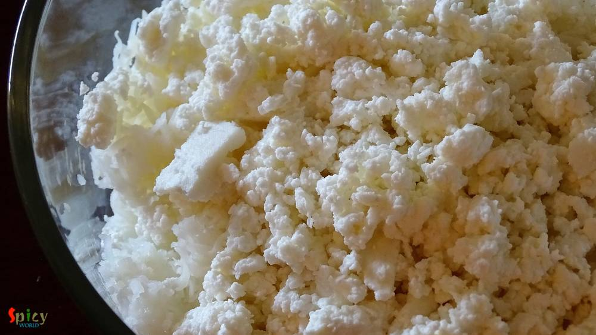
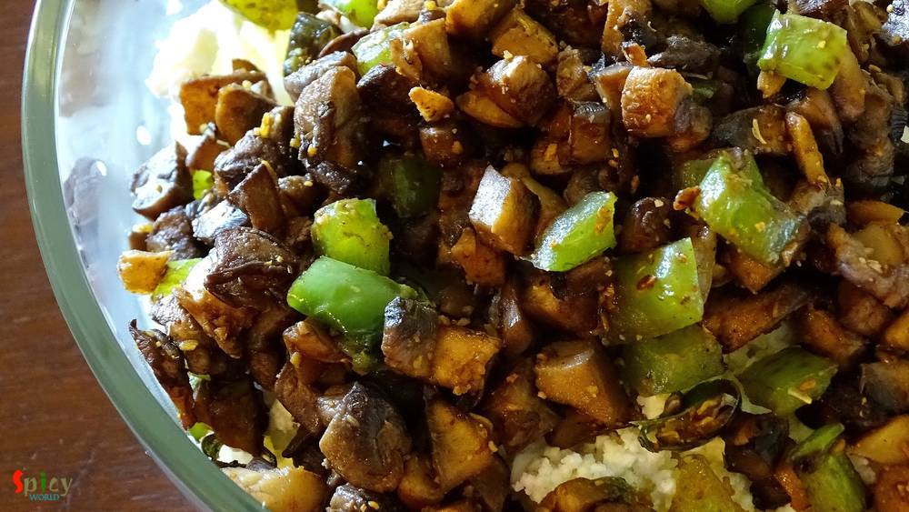
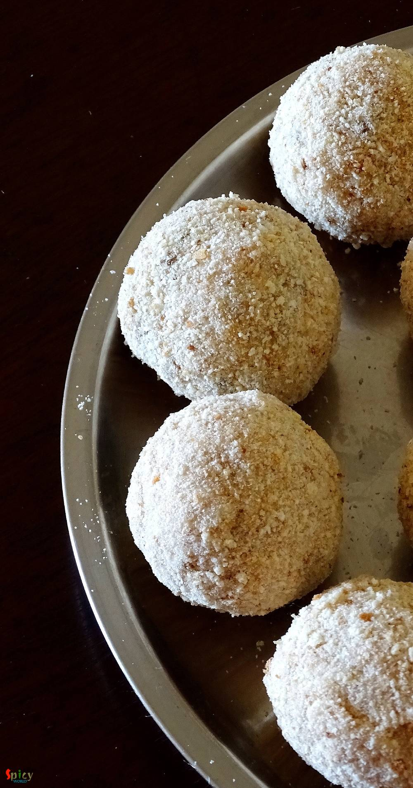

Simple and Easy Recipes
Cheese stuffed Veggie Pops
© 2016 Spicy World, Published on: Apr 7, 2016
We all love to eat fried stuff, right ? I know they are not that much healthy but still we do like them. I had lots of mushrooms in my fridge and couldn't find any interesting idea how to use them. Then suddenly I saw a picture of some beautifully golden colored veggie pops in google and I also remembered that I had cheese in my fridge. Then there was no confusion that I was going to make some cheese stuffed veggie pops. These pops can be enjoyed with ketchup by anybody, from kids to adults. Feel free to add any vegetable of your choice. After giving the first bite, those gooey melted cheese just blew my mind and thus, I had to share this yummy recipe with you.

Ingredients
- 1 big boiled potato.
- Half cup of grated / crumbled paneer.
- 1 cup of chopped mushrooms.
- 5 Tablespoons of chopped capsicum.
- Salt.
- 1 Teaspoon of chopped ginger garlic.
- 2 Teaspoons of chopped green chilies.
- 1 Teaspoon of chat masala.
- 1 Teaspoon of roasted coriander powder.
- Some cheese cubes.
- 3 Tablespoons of flour.
- Some water.
- Some breadcrumbs.
- A cup of white oil.


Steps
Heat a Teaspoon of oil in a pan.
Saute chopped ginger garlic and green chilies for few seconds.
Then add chopped mushrooms and capsicum. Fry for few minutes.
Lastly add salt, chat masala and coriander powder. Mix well and turn off the heat.
Grate the boiled potato in a mixing bowl.
Add crumbled paneer to it.
Then add the mushrooms mixture, some more salt and some red chilli powder (if needed).
Give everything a good mix.
Then divide the mixture into same proportion.
Take one portion, flatten it and place a cheese cube in the center.
Bring the edges to the center and seal it properly. Make rest of them this way.
Now mix the flour and some water in a bowl to make a thick batter.
Dip the balls into the batter and roll them in breadcrumbs.
If you wish you can double coat them.
Let them rest for 10-15 minutes in fridge.
Then deep fry them in hot oil till golden in color.
Your cheese stuffed veggie pops are ready ...
Enjoy them hot with some ketchup.
")